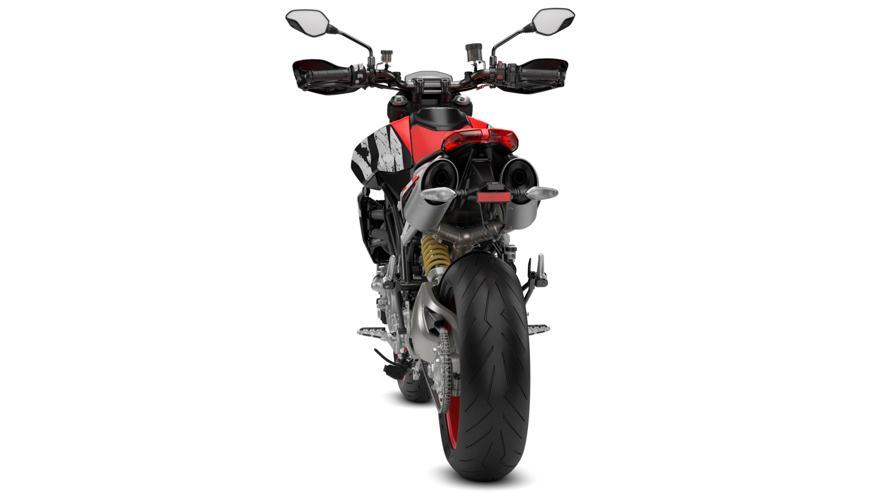
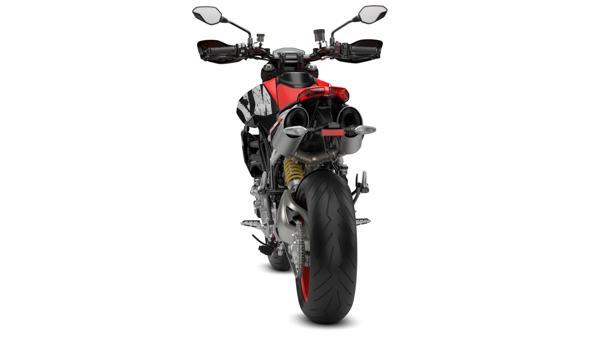
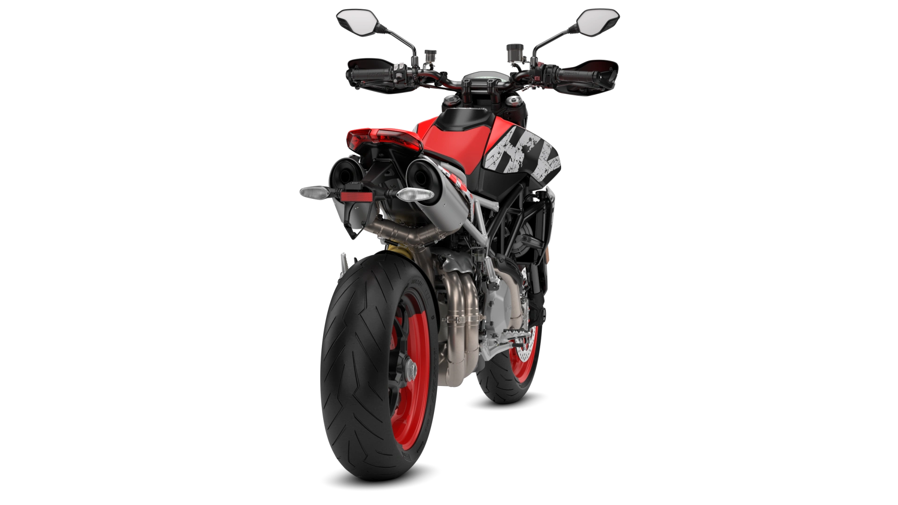
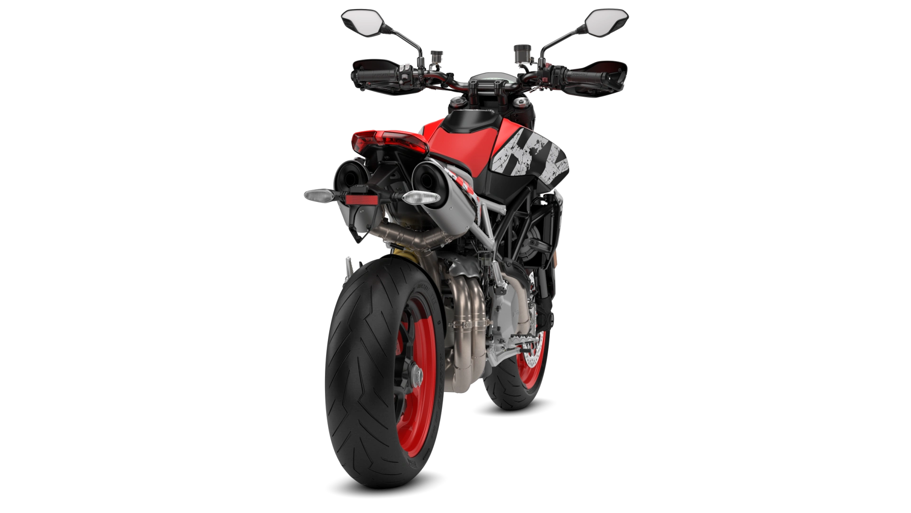

HYPERMOTARD 950 SP
20.790€
La carrocería SP
Con una librea que evoca el mundo de las carreras en su elección de colores y el de los deportes "freestyle" en sus gráficos, la Hypermotard 950 SP es el modelo ideal para aquellos que quieran probar la moto más deportiva de la familia y sentir el verdadero sabor de la adrenalina.
Testastretta 11° según la normativa Euro 5*.
El motor de la familia Hypermotard 950 es el bicilíndrico Ducati Testastretta 11° de 937 cc, con una potencia de 114 CV a 9.000 rpm y una curva de par plana con un máximo de 9,8 kgm a 7.250 rpm. Estos valores de potencia y par se mantienen inalterados con la transición a la homologación Euro 5*.
Motard style
El diseño de la Hypermotard 950 se inspira en el aspecto de las motos de motard y evoluciona en torno al doble escape bajo el asiento y las superestructuras reducidas que dejan entrever la mecánica, incluido el subchasis trasero enrejado que transmite un aire ultraligero y elegante a esta versión
Sofisticada y divertida
La ergonomía de esta moto inspirada en las motard garantiza que el piloto mantenga una posición de conducción erguida con los codos anchos, lo que se traduce en niveles máximos de reacción y control sean cuales sean las condiciones.
Mueve el raton para ver en 360

 

 



Ficha técnica
| MOTOR | Testastretta 11°, bicilíndrico en L, 4 válvulas por cilindro, desmodrómico, refrigeración líquida, tapas de culata de magnesio |
| CILINDRADA | 937 cc |
| DIÁMETRO X CARRERA | 94 x 67.5 mm |
| RATIO DE COMPRESIÓN | 13.3:1 |
| POTENCIA | 84 kW (114 hp) @ 9,000 rpm |
| PAR MOTOR | 96 Nm (71 lb-ft) @ 7,250 rpm |
| INYECCIÓN | Sistema de inyección electrónica de combustible, cuerpos de mariposa de Ø 53 mm con sistema Ride-by-Wire. |
| ESCAPE | Doble silenciador de aluminio bajo el colín; catalizador y dos sondas lambda. |
| CAJA DE CAMBIOS | 6 velocidades con Ducati Quick Shift arriba/abajo |
| TRANSMISIÓN PRIMARIA | Marchas de corte recto; relación 1,85:1 |
| RELACIÓN DE TRANSMISIÓN | 1=37/15 2=30/17 3=28/20 4=26/22 5=24/23 6=23/24 |
| TRANSMISIÓN SECUNDARIA | Cadena; piñón delantero 15; piñón trasero 43 |
| EMBRAGUE | Embrague multidisco en baño de aceite y servoasistido, mando hidráulico |
| CHASIS | Bastidor tubular de acero Trellis |
| SUSPENSIÓN DELANTERA | Öhlins totalmente ajustable, invertido Ø 48 mm |
| RUEDA DELANTERA | Aleación ligera forjada Marchesini de 3,5" x 17" y 3 radios en forma de W |
| NEUMÁTICO DELANTERO | Pirelli Diablo Supercorsa SP, 120/70 ZR17 |
| SUSPENSIÓN TRASERA | Elevador progresivo con monoamortiguador Öhlins totalmente ajustable. Basculante monobrazo de aluminio |
| RUEDA TRASERA | Llantas de aleación ligera forjada Marchesini de 3 radios en forma de W de 5,5" x 17" |
| NEUMÁTICO TRASERO | Pirelli Diablo Supercorsa SP, 180/55 ZR17 |
| RECORRIDO DE SUSPENSIÓN | 185 mm- 175 mm |
| FRENO DELANTERO | 2 discos semiflotantes con pestaña de aluminio de 320 mm, pinzas Monobloc Brembo montadas radialmente, de 4 pistones y 2 pastillas, bomba radial con palanca ajustable, con ABS Bosch Cornering |
| FRENO TRASERO | Disco de 245 mm, pinza de 2 pistones, con Cornering ABS de Bosch |
| INSTRUMENTACIÓN | Pantalla Full-TFT en color |
| PESO EN SECO | 176 kg |
| PESO Kerb | 198 kg |
| ALTURA ASIENTO | 890 mm |
| DISTANCIA ENTRE EJES | 1,498 mm |